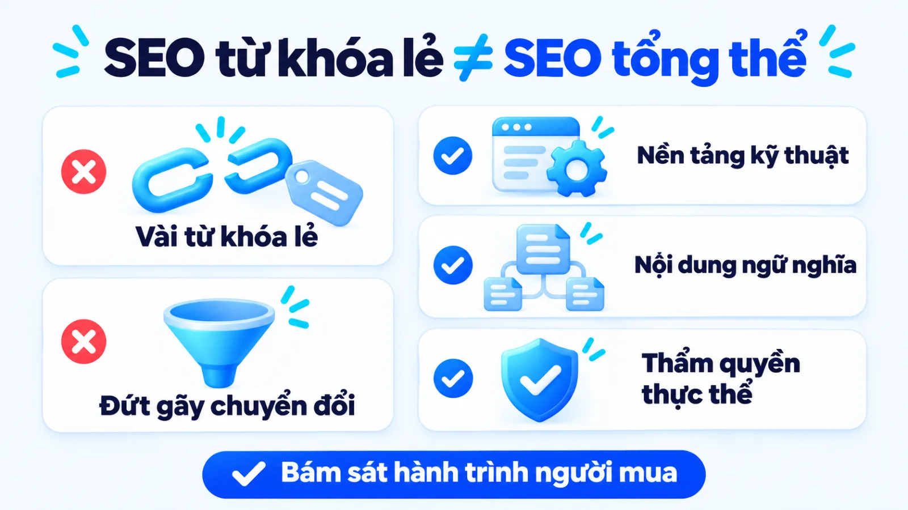
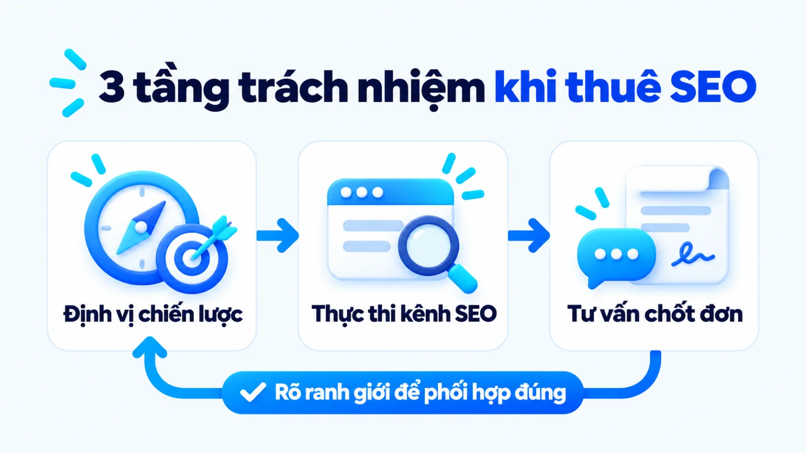
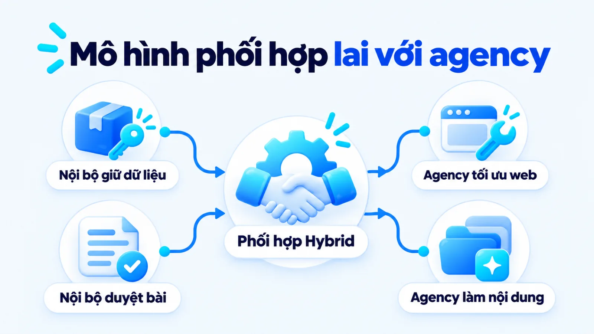
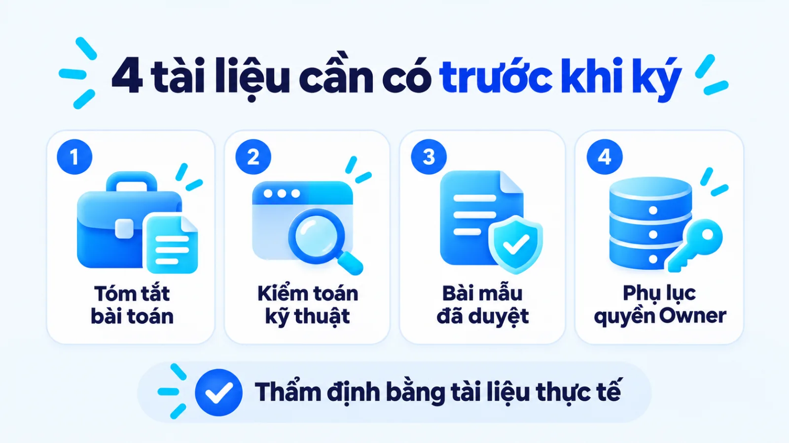
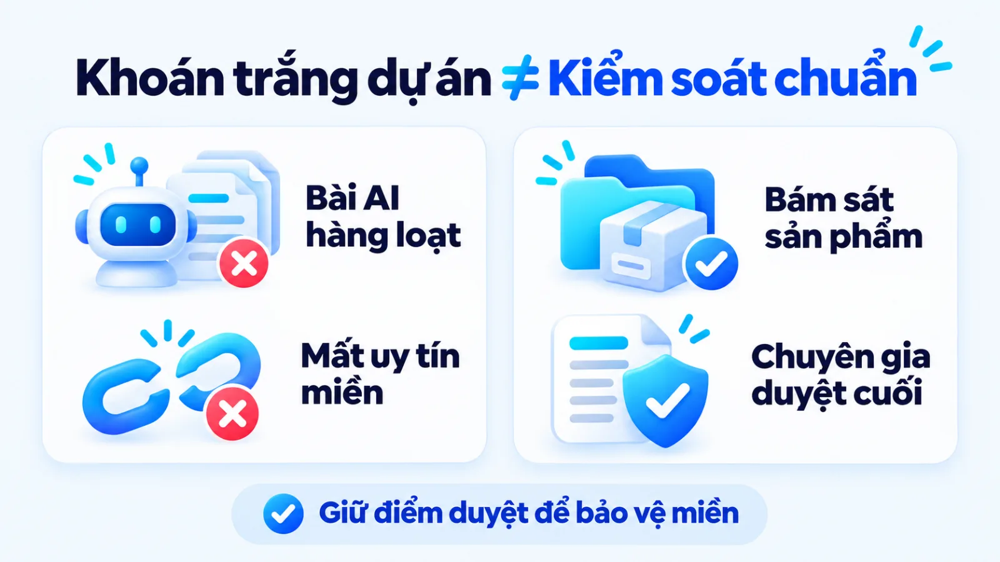
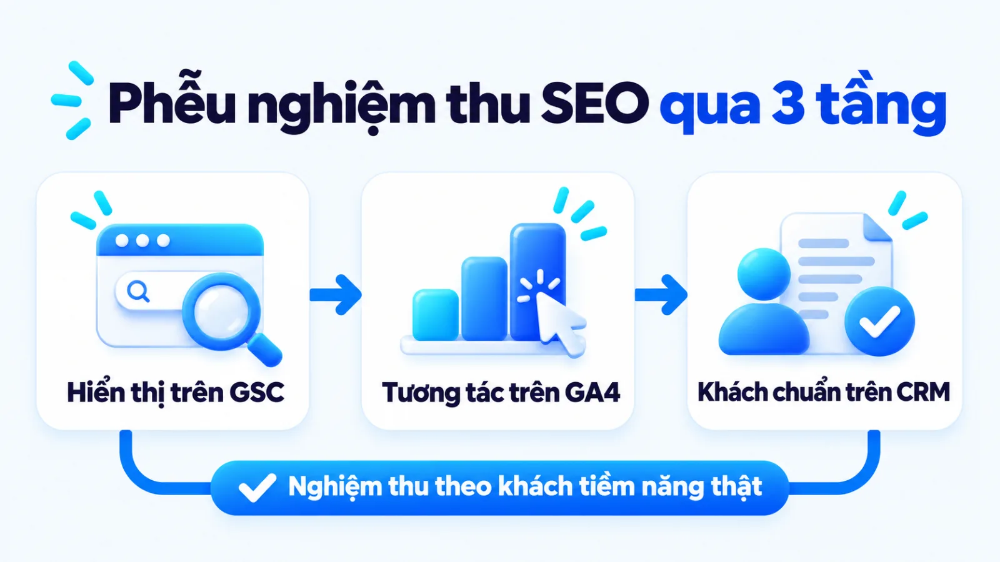

Công ty SEO là gì, tiêu chí chọn cho SME
Công ty SEO là đơn vị chuyên tối ưu cấu trúc kỹ thuật, hệ thống nội dung và tín hiệu uy tín của website để giúp doanh nghiệp thu hút lưu lượng tìm kiếm tự nhiên có nhu cầu mua thật. Với doanh nghiệp vừa và nhỏ, ký hợp đồng thuê ngoài cũng là quyết định trao quyền can thiệp vào mã nguồn, dữ liệu truy vấn và tài sản nội dung dài hạn. Nếu chọn đối tác chỉ qua cam kết thứ hạng ngắn hạn mà thiếu kiểm soát dữ liệu và chuyển đổi, doanh nghiệp dễ nhận về lượt truy cập bề nổi không tạo ra doanh thu. Tôi là Lê Tuấn Việt, Marketing Leader tại TAKI Group. Trong bài viết này, tôi cùng bạn làm rõ ranh giới giữa đối tác SEO với dịch vụ trọn gói, nguyên tắc chọn mô hình theo nguồn lực và cách nghiệm thu theo khách hàng tiềm năng đạt chuẩn.
- Đăng ngày
- Cập nhật

Tóm tắt nhanh
- Công ty SEO là đối tác xây dựng tài sản tìm kiếm tự nhiên trên website, cần được đánh giá theo chất lượng khách hàng tiềm năng đạt chuẩn thay vì cam kết thứ hạng từ khóa đơn lẻ.
- Doanh nghiệp vừa và nhỏ chỉ nên thuê công ty SEO khi đã rõ biên lợi nhuận sản phẩm, chân dung người mua và có người phụ trách nội bộ giữ quyền kiểm duyệt thông điệp cuối.
- Quy trình thẩm định đối tác gồm bốn bước có đầu ra kiểm chứng được: chốt bài toán kinh doanh, kiểm toán kỹ thuật, rà soát quy trình nội dung có AI và khóa quyền sở hữu dữ liệu.
- Nghiệm thu dự án SEO phải tách thành ba tầng nối tiếp từ hiển thị kỹ thuật trên Google Search Console, hành vi tương tác trên GA4 đến doanh thu xác nhận trong CRM.
Mục lục bài viết8 phần
Công ty SEO là gì trong hệ thống thuê marketing
Công ty SEO (SEO Agency, đơn vị cung cấp dịch vụ tối ưu hóa công cụ tìm kiếm) là tổ chức chuyên trách tối ưu cấu trúc kỹ thuật, hệ thống nội dung và tín hiệu uy tín của website nhằm giúp doanh nghiệp thu hút lưu lượng tìm kiếm tự nhiên có nhu cầu thật và chuyển đổi thành khách hàng tiềm năng đạt chuẩn.
Theo hướng dẫn nền tảng năm 2024 của Google Search Central, hoạt động tối ưu hóa công cụ tìm kiếm giúp hệ thống thu thập, hiểu nội dung trang web và giúp người dùng quyết định có truy cập trang hay không. Đặt trong hệ thống Marketing cho doanh nghiệp, việc hợp tác với một đối tác chuyên môn không đơn thuần là mua vị trí hiển thị ngắn hạn, mà là quá trình xây dựng tài sản số tích lũy thuộc quyền sở hữu của chính doanh nghiệp.
Điểm khác biệt căn bản mà các SME (doanh nghiệp vừa và nhỏ) cần tách bạch ngay từ đầu là ranh giới giữa gói đẩy từ khóa đơn lẻ với phương pháp triển khai tổng thể theo hành trình mua. Thay vì dồn nguồn lực vào vài truy vấn ngắn cạnh tranh cao nhưng ý định mơ hồ, đối tác có tư duy hoạch định sẽ tổ chức cấu trúc thông tin từ lúc khách hàng nhận diện vấn đề, so sánh giải pháp đến khi gửi yêu cầu tư vấn.

Phạm vi công việc của các công ty SEO hiện nay
Để chuyển hóa nhu cầu tìm kiếm thành đơn hàng hoặc dữ liệu liên hệ, các công ty SEO hiện nay không chỉ viết bài hay đi gắn liên kết rời rạc. Phạm vi triển khai chuyên chuẩn được chia thành ba nhóm hạng mục cốt lõi vận hành đồng bộ với nhau dưới đây:
- Tối ưu hạ tầng kỹ thuật (Technical SEO): Rà soát khả năng thu thập dữ liệu, trạng thái lập chỉ mục, cấu trúc đường dẫn, sơ đồ trang và tốc độ phản hồi trên di động để bộ máy tìm kiếm đọc hiểu website thông suốt.
- Kiến trúc nội dung và ngữ nghĩa (Onpage & Content): Lập bản đồ chủ đề theo ý định tìm kiếm, sản xuất nội dung chuyên sâu trả lời thẳng câu hỏi của người mua và tối ưu khả năng được hệ thống AI chọn trích dẫn.
- Xây dựng thẩm quyền chủ đề (Offpage & Entity): Củng cố tín hiệu nhận diện thương hiệu nhất quán trên môi trường số và thu hút liên kết tự nhiên từ các nguồn cùng lĩnh vực có uy tín thật.
Trong quá trình vận hành thực tế, ba trụ cột này phải gắn chặt với trải nghiệm trang đích và luồng tiếp nhận của đội bán hàng. Nếu hạ tầng kỹ thuật bị chặn lập chỉ mục hoặc nội dung bài viết tách rời danh mục sản phẩm chủ lực, mọi nỗ lực mở rộng số lượng bài đăng đều không tạo ra giá trị thương mại.
Khi nào SME chưa nên thuê công ty SEO bên ngoài
Tài liệu hướng dẫn năm 2024 của Google Search Central chỉ rõ những thay đổi tối ưu trên website thường cần từ vài ngày đến vài tháng để hệ thống thu thập lại và phản ánh đầy đủ vào kết quả tìm kiếm tự nhiên. Do đặc thù có độ trễ thời gian này, không phải SME (doanh nghiệp vừa và nhỏ) nào cũng phù hợp để ký hợp đồng dịch vụ ngay lập tức.
Trước khi quyết định chọn SEO hay quảng cáo Google Ads, chủ doanh nghiệp cần tự rà soát năng lực chịu đựng dòng tiền và mức độ hoàn thiện của mô hình kinh doanh. Bốn điều kiện cho thấy doanh nghiệp chưa nên thuê đối tác SEO bên ngoài ở thời điểm hiện tại gồm:
- Sản phẩm hoặc dịch vụ đang trong giai đoạn thử nghiệm sơ khởi, chưa xác định được biên lợi nhuận gộp và mức chi phí thu hút khách hàng tối đa có thể chấp nhận.
- Doanh nghiệp đang cần đơn hàng và dòng tiền quay vòng ngay trong vài tuần tới để duy trì hoạt động, không đủ quỹ dự phòng cho chu kỳ tích lũy từ một đến hai quý.
- Đội ngũ nội bộ hoàn toàn trống người hiểu sản phẩm để cung cấp dữ liệu gốc, bảng thông số kỹ thuật và kiểm duyệt tính chính xác của nội dung chuyên môn.
- Website chưa có trang đích chuyển đổi rõ ràng hoặc bộ phận kinh doanh chưa có quy trình ghi nhận, phân loại và phản hồi khách hàng tiềm năng đổ về.
Công ty SEO khác dịch vụ agency tổng thể thế nào
Công ty SEO chuyên biệt tập trung nguồn lực vào việc tối ưu kênh tìm kiếm tự nhiên và tích lũy tài sản trên website, trong khi dịch vụ agency marketing ngoài trọn gói phụ trách vận hành đa kênh từ quảng cáo trả phí, mạng xã hội đến truyền thông thương hiệu. Năm tiêu chí trong bảng dưới đây giúp bạn phân định rõ ranh giới giữa hai mô hình này.
| Tiêu chí đối chiếu | Công ty SEO chuyên biệt | Agency marketing trọn gói |
|---|---|---|
| Mục tiêu trọng tâm | Thu hút lưu lượng tìm kiếm tự nhiên có ý định rõ và tăng chuyển đổi trên website | Phối hợp đa điểm chạm để tăng độ phủ thương hiệu, lưu lượng và số khách tiềm năng |
| Phạm vi kênh phụ trách | Chuyên sâu vào cấu trúc website, nội dung tìm kiếm, dữ liệu có cấu trúc và uy tín miền | Bao phủ nhiều kênh gồm quảng cáo trả phí, mạng xã hội, nội dung đa phương tiện và PR |
| Độ trễ ghi nhận kết quả | Cần từ vài ngày đến vài tháng để tích lũy thẩm quyền chủ đề và thấy rõ chuyển biến | Tạo tín hiệu hiển thị và lượt tương tác nhanh ngay khi kích hoạt ngân sách quảng cáo |
| Tài sản để lại sau dự án | Hệ thống bài viết chuyên sâu, kiến trúc danh mục chuẩn và nền tảng kỹ thuật bền vững | Bộ ấn phẩm sáng tạo, dữ liệu tệp đối tượng quảng cáo và lịch sử chiến dịch đa kênh |
| Yêu cầu phối hợp nội bộ | Cần đầu mối cung cấp kiến thức sản phẩm và kỹ thuật viên hỗ trợ can thiệp mã nguồn | Cần người quản lý duyệt kế hoạch tổng thể, phân bổ ngân sách và khớp nối với bán hàng |
Giới hạn khi đọc bảng: sự phân tách trên dựa theo phạm vi dịch vụ cốt lõi, trong khi thực tế nhiều đơn vị lớn cung cấp cả gói tổng thể lẫn gói chuyên sâu từng kênh. Doanh nghiệp cần đọc kỹ phụ lục hạng mục bàn giao trong báo giá thay vì chỉ dựa vào tên gọi tự giới thiệu của đối tác.

Một ngộ nhận phổ biến khiến nhiều chủ doanh nghiệp thất vọng khi thuê dịch vụ agency là kỳ vọng đơn vị thực thi kênh tìm kiếm có thể giải quyết thay bài toán định vị thương hiệu hoặc sửa lỗi quy trình chốt đơn của đội sale. Khi sản phẩm thiếu lợi thế cạnh tranh rõ ràng hoặc giá bán lệch khỏi mặt bằng thị trường, việc đưa thêm hàng nghìn người truy cập vào website vẫn không tạo ra hợp đồng.
Nếu nút thắt thực sự nằm ở việc chưa rõ phân khúc khách hàng, thông điệp cạnh tranh hay cơ cấu ngân sách giữa các kênh, bạn nên ưu tiên khâu tư vấn chiến lược marketing trước khi tìm đơn vị triển khai. Khi đã có một kế hoạch marketing tổng thể chỉ rõ vai trò của từng kênh trong phễu chuyển đổi, việc giao bài toán cụ thể cho công ty SEO sẽ tiết kiệm thời gian thử sai hơn rất nhiều.
Khi nào chọn in-house hay thuê marketing ngoài
Quyết định tự xây dựng đội ngũ nội bộ (in-house), thuê công ty SEO chuyên biệt hay thuê marketing ngoài trọn gói phụ thuộc vào độ phức tạp kỹ thuật của dự án, quỹ thời gian quản trị của người đứng đầu và khả năng duy trì chi phí nhân sự cố định. Ba phương án lựa chọn trong bảng dưới đây tóm lược điều kiện phù hợp và sự đánh đổi nguồn lực tương ứng.
| Phương án triển khai | Điều kiện phù hợp | Sự đánh đổi nguồn lực |
|---|---|---|
| Tự xây đội in-house | Ngành hàng có tính chuyên môn đặc thù cao; có người quản lý đủ năng lực tuyển và kèm cặp | Hiểu sâu sản phẩm và chủ động hoàn toàn; tốn chi phí lương cố định và thời gian đào tạo |
| Thuê công ty SEO | Cần xử lý kỹ thuật website phức tạp và mở rộng cụm chủ đề nhanh; có đầu mối duyệt bài | Tận dụng ngay đội ngũ đủ vị trí chuyên môn; rủi ro lệch thông điệp nếu buông khâu kiểm duyệt |
| Thuê marketing ngoài | Doanh nghiệp mới cần chạy đồng thời nhiều kênh với ngân sách vừa phải; thiếu quản lý | Triển khai nhanh và gọn đầu mối giao tiếp; độ sâu chuyên môn ở từng kênh đơn lẻ thường mỏng |
Giới hạn khi đọc bảng: bảng chọn này giả định doanh nghiệp đang xét trên cùng một quy mô ngân sách marketing hàng tháng. Khi vận hành thực tế, tổng mức đầu tư của phương án tự xây đội nội bộ thường bị tính thiếu khoản tuyển dụng, công cụ phân tích dữ liệu trả phí và rủi ro nhân sự nghỉ việc giữa chừng.

Điều kiện chọn seo agency vietnam theo nguồn lực
Tại thị trường Việt Nam, việc hợp tác với một SEO Agency tại Việt Nam phát huy hiệu quả cao nhất khi doanh nghiệp đang cần nâng cấp toàn diện cấu trúc kỹ thuật website hoặc mở rộng hàng chục cụm chủ đề trong thời gian ngắn. Một nhân sự nội bộ kiêm nhiệm rất khó vừa giỏi lập trình sửa lỗi thu thập dữ liệu, vừa am hiểu dữ liệu có cấu trúc (Schema Markup) lại vừa có khả năng biên tập nội dung số lượng lớn.
Tuy nhiên, điều kiện tiên quyết để mô hình này thành công là doanh nghiệp phải có đầu mối nội bộ am hiểu sản phẩm. Theo hướng dẫn năm 2024 của Google Search Central, hệ thống xếp hạng tự động ưu tiên nội dung biên soạn vì lợi ích người đọc kèm chuyên môn và thông tin gốc. Đối tác bên ngoài không thể tự có dữ liệu vận hành thật nếu nội bộ không cung cấp nguyên liệu đầu vào.
Đánh đổi khi thuê marketing online trọn gói
Khi chọn phương án thuê marketing online trọn gói (thường gọi là phòng marketing thuê ngoài), doanh nghiệp giải quyết được bài toán thiếu hụt nhân sự vận hành đa kênh trong giai đoạn đầu. Đối tác sẽ chia ngân sách để vừa duy trì bài đăng mạng xã hội, vừa chạy quảng cáo tìm kiếm, vừa viết bài cho website theo một lịch trình cố định.
Sự đánh đổi lớn nhất của mô hình trọn gói nằm ở chiều sâu chuyên môn của từng hạng mục. Khi nhân sự phải chia thời gian cho nhiều đầu việc, bài viết rất dễ rơi vào trạng thái tổng hợp bề nổi và lệch khỏi chiến lược digital marketing dài hạn. Do đó, tôi ưu tiên mô hình lai (hybrid): nội bộ giữ chiến lược, dữ liệu và điểm duyệt cuối, còn đối tác xử lý kỹ thuật và sản xuất khối lượng.
Quy trình 4 bước thẩm định và chọn công ty SEO
Quy trình thẩm định và chọn công ty SEO cho doanh nghiệp vừa và nhỏ gồm bốn bước nối tiếp: chốt bài toán kinh doanh, kiểm tra năng lực chẩn đoán kỹ thuật, rà soát quy trình sản xuất nội dung có AI và khóa chặt quyền sở hữu tài sản số trong hợp đồng. Thực hiện đúng trình tự này giúp bạn lọc bỏ các đơn vị chỉ bán lời hứa thứ hạng.

Bước 1: Chốt bài toán kinh doanh và biên lợi nhuận
Bắt đầu bằng việc lập bảng danh mục sản phẩm hoặc dịch vụ có biên lợi nhuận cao nhất, kèm theo câu hỏi thường gặp và rào cản khiến khách hàng chần chừ trước khi mua. Thay vì gửi cho đối tác một danh sách từ khóa tự nghĩ và hỏi giá, bạn hãy giao bài toán kinh doanh để xem họ đề xuất cấu trúc cụm chủ đề và trang đích chuyển đổi như thế nào.
Đầu ra: bản tóm tắt bài toán kinh doanh và mục tiêu chuyển đổi (Business & SEO Brief) làm đề bài thống nhất để gửi cho các ứng viên.
Bước 2: Kiểm tra năng lực kỹ thuật và phương pháp
Yêu cầu các công ty SEO đang tham gia chào thầu thực hiện một bản chẩn đoán sơ bộ ngay trên website hiện tại của bạn. Một đơn vị có năng lực thực thi thật sẽ chỉ ra được các điểm nghẽn về thu thập dữ liệu, lập chỉ mục, cấu trúc phân cấp tiêu đề và sự thiếu hụt nội dung so với ý định tìm kiếm thực tế trên trang kết quả.
Ở bước này, nếu đơn vị nào cam kết chắc chắn vị trí đầu bảng trong thời gian ngắn hoặc chào gói mua liên kết hàng loạt giá rẻ, bạn nên loại ngay. Theo chính sách chống spam năm 2024 của Google Search Central, hành vi mua bán hay tạo liên kết nhân tạo nhằm thao túng thứ hạng đều vi phạm quy định và khiến website chịu án phạt tụt hạng toàn miền.
Đầu ra: biên bản kiểm toán kỹ thuật sơ bộ (Technical Audit) kèm danh sách hạng mục ưu tiên xử lý có giải thích rõ lý do.
Bước 3: Thẩm định case study và quy trình có AI
Đề nghị đối tác trình bày trực tiếp một đến hai dự án thực tế có mô hình kinh doanh tương đồng, trong đó chỉ rõ dữ liệu xuất phát điểm (baseline), các thao tác đã can thiệp và kết quả chuyển đổi trong cùng một kỳ đo. Bạn cần yêu cầu gặp trực tiếp trưởng nhóm dự án (Project Leader) sẽ phụ trách tài khoản của mình thay vì chỉ làm việc với nhân sự phát triển kinh doanh.
Đặc biệt, hãy hỏi thẳng cách họ dùng AI khi viết content marketing hàng ngày. Chính sách chống spam năm 2024 của Google Search Central quy định việc dùng công cụ tự động sinh hàng loạt trang thiếu giá trị gốc nhằm thao túng thứ hạng là vi phạm lạm dụng nội dung quy mô lớn (scaled content abuse). Đối tác đạt chuẩn phải chứng minh quy trình có người xác thực dữ kiện và duyệt cuối trước khi đăng.
Đầu ra: hồ sơ đối chiếu năng lực đội ngũ thực thi và một bài viết mẫu đã qua quy trình biên tập, kiểm chứng dữ kiện thật.
Bước 4: Rà soát quyền sở hữu tài sản và hợp đồng
Thiết lập nguyên tắc bảo vệ tài sản số ngay trong dự thảo hợp đồng trước khi ký. Tài liệu phân quyền năm 2024 của Google Search Console Help trên Google Search Console (GSC, công cụ theo dõi hiệu suất tìm kiếm của Google) tách rõ quyền Chủ sở hữu với quyền Người dùng; tài liệu cũng khuyến nghị không chia sẻ mật khẩu và phải thu hồi mã xác minh ngay khi ngừng hợp tác.
Trong hợp đồng, doanh nghiệp phải đứng tên sở hữu tên miền, máy chủ, mã nguồn, tài sản GSC và tài khoản Google Analytics 4 (GA4, nền tảng phân tích dữ liệu của Google). Toàn bộ bài viết, hình ảnh và tài khoản mạng xã hội khởi tạo trong thời gian dự án phải được quy định là tài sản thuộc sở hữu của bên thuê sau khi thanh toán.
Đầu ra: phụ lục hợp đồng quy định quyền sở hữu dữ liệu, cơ chế phân quyền tối thiểu và danh mục bàn giao khi kết thúc dự án.
Ba lỗi thường gặp làm lệch kết quả khi thuê SEO
Ba lỗi phổ biến khiến doanh nghiệp vừa và nhỏ mất ngân sách khi thuê công ty SEO gồm: giao khoán trắng theo cam kết từ khóa ngắn tách rời chuyển đổi, buông quyền quản trị tài khoản dữ liệu cho đối tác và nghiệm thu theo số lượng bài viết AI sản xuất hàng loạt. Tình huống đối chiếu dưới đây minh họa rõ cơ chế dẫn tới sự khác biệt này.
Ví dụ biên tập, không phải kết quả khách hàng thật
Đối chiếu hai cách giao việc và kiểm soát khi thuê công ty SEO cho SME
Hai doanh nghiệp thiết bị lọc nước tại Hà Nội cùng thuê đối tác SEO để tăng yêu cầu báo giá. Một bên giao KPI (chỉ số đánh giá hiệu quả công việc) theo từ khóa thông tin chung, để đối tác giữ quyền Chủ sở hữu tài khoản GSC, GA4 và đăng bài AI tự động không kiểm duyệt; bên còn lại khóa KPI theo cụm sản phẩm chủ lực, giữ quyền Chủ sở hữu dữ liệu và cử kỹ sư duyệt thông số trước khi xuất bản.
- Cách làm sai
- Khoán trắng từ khóa rộng
- Cách làm đúng
- Nắm dữ liệu và duyệt bài
- Hệ quả vận hành
- Khác biệt lượng báo giá
Trong ví dụ biên tập này, nhiều chủ doanh nghiệp thường tự hỏi: đã thuê dịch vụ bên ngoài để giảm tải, vì sao nội bộ vẫn phải duyệt bài và giữ tài khoản? Thực tế, công ty SEO giỏi kỹ thuật truy xuất và cấu trúc thông tin, nhưng khách hàng B2B (giao dịch giữa doanh nghiệp với doanh nghiệp) lại quyết định dựa trên thông số kỹ thuật và chính sách bảo hành mà chỉ nội bộ mới nắm rõ.

Khi doanh nghiệp buông khâu kiểm duyệt cho đối tác chạy theo số lượng bài đăng, đội ngũ thực thi rất dễ lạm dụng công cụ tạo văn bản tự động để kịp tiến độ nghiệm thu. Những bài viết sai kiến thức cơ bản sẽ khiến khách hàng tiềm năng thoát trang ngay, đồng thời làm tên miền đối mặt rủi ro tụt hạng trong các đợt cập nhật thuật toán cốt lõi.
Tương tự, việc để đối tác tự tạo và giữ quyền Chủ sở hữu duy nhất trên GSC hoặc GA4 sẽ đẩy doanh nghiệp vào thế bị động khi đổi nhà cung cấp. Nếu phát sinh tranh chấp, mất quyền truy cập lịch sử dữ liệu truy vấn và danh sách liên kết ngoài đồng nghĩa với việc đội ngũ kế nhiệm phải làm lại từ đầu. Thuê ngoài thực thi không phải là giao trắng tài sản.
Cách đo hiệu quả và nghiệm thu công ty SEO
Nghiệm thu công ty SEO cần thực hiện trên một khung đo lường ba tầng nối tiếp: từ sức khỏe kỹ thuật và khả năng hiển thị trên Google Search Console, qua hành vi tương tác và sự kiện quan trọng trên GA4, đến số lượng khách hàng tiềm năng đạt chuẩn và doanh thu trong CRM (Customer Relationship Management, hệ thống quản trị quan hệ khách hàng). Bảng dưới đây quy định cách đọc từng tầng dữ liệu.
| Tầng đo và chỉ số | Cách tính và nguồn dữ liệu | Giới hạn khi đọc số liệu |
|---|---|---|
| Tầng 1: Hiện diện | Số trang lập chỉ mục, lượt hiển thị, lượt nhấp, CTR và vị trí trung bình trên Search Console | Phản ánh khả năng được tìm thấy trên Google; chưa cho biết người dùng làm gì sau khi vào trang |
| Tầng 2: Tương tác | Phiên truy cập tương tác và sự kiện quan trọng từ nguồn Organic Search trong báo cáo GA4 | Ghi nhận thao tác xem bảng giá, bấm gọi hoặc gửi form; chưa loại trừ số điện thoại sai hoặc trùng |
| Tầng 3: Doanh thu | Tỷ lệ khách tiềm năng đạt chuẩn (Qualified Lead), chi phí trên một lead và doanh thu trong CRM | Chịu ảnh hưởng trực tiếp bởi tốc độ phản hồi, kỹ năng tư vấn của sale và chính sách giá bán |
Giới hạn khi đọc bảng: theo tài liệu năm 2024 của Google Search Console Help, báo cáo hiệu suất đo bốn chỉ số gồm lượt nhấp, lượt hiển thị, tỷ lệ nhấp trung bình (CTR) và vị trí trung bình theo truy vấn. Trong khi đó, tài liệu năm 2024 của Google Analytics Help đo nguồn gốc phiên truy cập gắn với tương tác và sự kiện quan trọng, nên số lượt nhấp GSC sẽ khác số phiên trên GA4.

Để tránh tranh cãi khi nghiệm thu, hai bên cần thống nhất trước các hành vi trung gian được tính là chuyển đổi vi mô trên website ở Tầng 2 như tải báo giá hoặc gửi biểu mẫu. Nếu truy cập vào trang sản phẩm tăng nhưng ít người liên hệ, hai bên cần sửa thông điệp trang đích; nếu biểu mẫu về nhiều nhưng không chốt được đơn, doanh nghiệp cần rà lại tệp từ khóa và khâu gọi điện của bán hàng.
Nguyên tắc đọc báo cáo nghiệm thu theo chu kỳ
Không dùng chỉ số của một tuần biến động để kết luận cả chiến dịch, và không tính thưởng theo tổng lưu lượng từ bài tin tức ngoài ngành. Trong các chương trình cố vấn và thẩm định kế hoạch tại TAKI Group mà tôi tham gia, mọi báo cáo kênh đều phải nối từ trang đích sang chất lượng khách hàng tiềm năng trong cùng kỳ đo. Xem thêm cách đo hiệu quả content marketing để áp dụng đồng bộ cho đội ngũ.
Câu hỏi thường gặp về công ty SEO
Khi nào doanh nghiệp nên ngừng hợp đồng với công ty SEO?
Doanh nghiệp nên dừng hợp tác ngay khi phát hiện đối tác dùng thủ thuật mua bán liên kết nhân tạo, xuất bản bài viết tự động hàng loạt sai kiến thức ngành hoặc từ chối trao quyền chủ sở hữu Google Search Console và GA4. Ngoài ra, nếu sau hai quý triển khai mà số trang được lập chỉ mục, lượt hiển thị truy vấn mục tiêu và sự kiện tương tác không cải thiện kèm việc đối tác không giải trình được bằng dữ liệu gốc, bạn cần kích hoạt điều khoản thanh lý hợp đồng.
Thuê công ty SEO cần bàn giao những tài sản dữ liệu nào?
Doanh nghiệp bắt buộc nắm quyền Chủ sở hữu đã xác minh đối với tài sản Google Search Console, tài khoản Google Analytics 4, tên miền, mã nguồn website và toàn bộ bài viết, hình ảnh đã sản xuất. Khi kết thúc hợp đồng, đối tác phải bàn giao bản đồ nội dung, nhật ký chỉnh sửa kỹ thuật và gỡ bỏ toàn bộ mã xác minh phụ hoặc quyền truy cập của nhân sự bên thứ ba.
Vì sao lưu lượng SEO tăng nhưng doanh thu không tăng?
Nguyên nhân cốt lõi là công ty SEO tập trung đẩy các từ khóa thông tin quá rộng có lượng tìm kiếm lớn nhưng lệch khỏi ý định mua hàng và phân khúc khách hàng mục tiêu của doanh nghiệp. Bên cạnh đó, trang đích thiếu thông điệp thuyết phục, giao diện di động khó thao tác hoặc quy trình phản hồi khách hàng tiềm năng chậm trễ của bộ phận bán hàng cũng làm đứt gãy tỷ lệ chốt đơn.
Doanh nghiệp nhỏ nên thuê SEO từ khóa hay SEO tổng thể?
Doanh nghiệp vừa và nhỏ nên chọn phương pháp SEO tổng thể thu gọn theo từng cụm chủ đề gắn trực tiếp với dòng sản phẩm có biên lợi nhuận cao nhất, thay vì mua gói đẩy vài từ khóa ngắn rời rạc. Cách triển khai theo cụm chủ đề giúp bao phủ trọn hành trình từ tìm hiểu vấn đề, so sánh phương án đến quyết định mua, đồng thời giảm rủi ro mất trắng lưu lượng khi một từ khóa biến động.
Làm sao kiểm soát rủi ro khi công ty SEO dùng AI viết bài?
Bạn cần yêu cầu đối tác quy định rõ trong hợp đồng rằng công cụ AI chỉ dùng để hỗ trợ phân tích cấu trúc hoặc lập dàn ý, còn người có chuyên môn phải trực tiếp xác thực dữ kiện và biên tập lại. Mọi thông số sản phẩm, báo giá và nhận định chuyên ngành đều phải qua bước kiểm duyệt cuối của đầu mối nội bộ trước khi xuất bản lên website.
Nên cấp quyền gì trên Search Console cho công ty SEO?
Chủ doanh nghiệp phải tự khởi tạo tài sản trên Google Search Console, giữ quyền Chủ sở hữu đã xác minh và chỉ cấp quyền Người dùng đầy đủ hoặc Người dùng hạn chế cho tài khoản của đối tác. Cách phân quyền tối thiểu này đảm bảo đội ngũ thực thi có đủ dữ liệu truy vấn và lập chỉ mục để làm việc nhưng không thể xóa quyền kiểm soát gốc của doanh nghiệp.
Kết luận
Chọn công ty SEO thực chất là quyết định chọn một đối tác cùng xây dựng và bảo vệ tài sản tìm kiếm dài hạn dựa trên bài toán lợi nhuận, quy trình kiểm duyệt minh bạch và quyền kiểm soát dữ liệu gốc của doanh nghiệp. Thứ hạng từ khóa hay lưu lượng truy cập chỉ là tín hiệu dẫn đường ở tầng đầu, còn giá trị thực sự nằm ở tỷ lệ khách hàng tiềm năng đạt chuẩn đi vào hệ thống kinh doanh.
Ngay trong tuần này, trước khi gửi yêu cầu báo giá cho bất kỳ đơn vị nào, bạn hãy mở Google Search Console và Google Analytics 4 của doanh nghiệp để kiểm tra xem tài khoản nội bộ đang giữ quyền Chủ sở hữu đã xác minh hay chưa, đồng thời liệt kê ba dòng sản phẩm có biên lợi nhuận tốt nhất cần ưu tiên nguồn lực.
Khi bài toán của doanh nghiệp vượt khỏi phạm vi tối ưu một kênh tìm kiếm đơn lẻ và cần thiết kế lại phễu chuyển đổi, phân bổ ngân sách đa kênh cùng bảng đo lường giữa marketing với bán hàng, việc sửa từng đầu việc rời rạc sẽ không còn đủ hiệu quả. Bạn đang vướng ở khâu lập đề bài thẩm định đối tác hay cần một khung hoạch định đồng bộ để kiểm soát hiệu suất thuê ngoài?